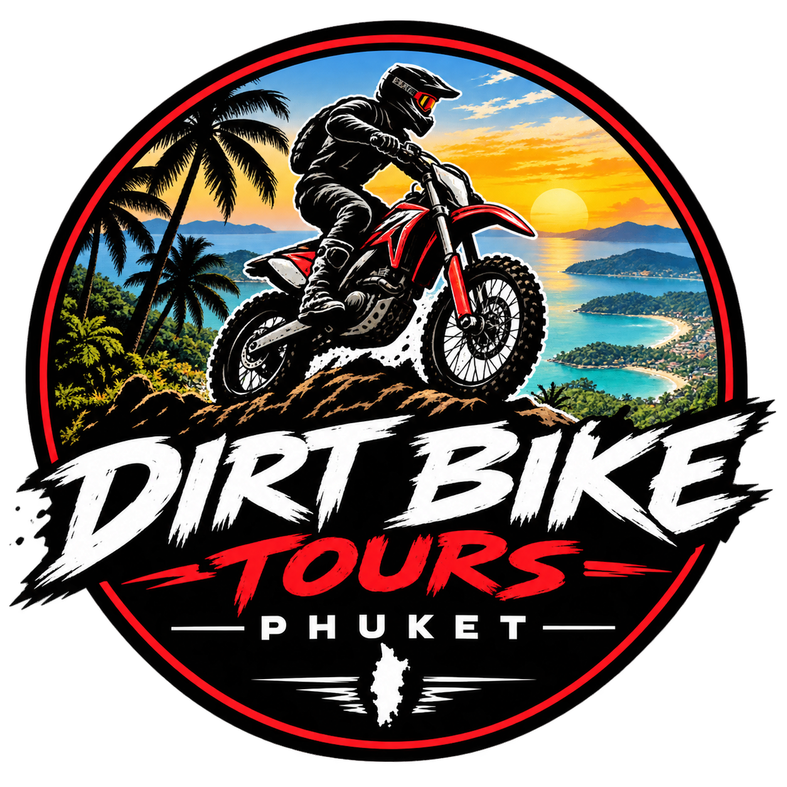

CRF250L
Honda CRF250L
Light, predictable and easy to handle. Great for riders who want to enjoy tight trails and technical sections.
- 249cc single-cylinder
- Excellent trail handling
- Suitable for experienced beginners+

Dirt Bike Tours PhuketPHUKET • THAILAND
CRF dirt bikes. Jungle trails. Mountain views. Coastal roads. An unforgettable way to experience Phuket.
THE FLEET
Honda CRF bikes built for exploring Phuket beyond the normal tourist roads.
Light, predictable and easy to handle. Great for riders who want to enjoy tight trails and technical sections.
A versatile adventure machine with more torque for climbs, open roads and longer Phuket rides.
NOT JUST A RENTAL
Leave the traffic behind and ride into Phuket's greener side. Our routes can combine mountain roads, viewpoints, jungle tracks and quiet coastal stretches.
ADVENTURE OPTIONS
Tour routes and duration can be adjusted to rider experience, weather and trail conditions.
Mountain roads, dirt sections and viewpoints through Phuket's greener interior.
A full adventure mixing back roads, elevation, viewpoints and coastal scenery.
Tell us what you want to ride and we'll build a route around your group.
Tour availability, routes and pricing depend on weather, trail access and rider experience. Contact us for current options.
WHY RIDE WITH US
Purpose-built Honda CRF dirt bikes for Phuket adventures.
Routes focused on the island's mountains, jungle and coast.
Ask about pickup and meeting options around Phuket.
We check the bikes before every ride and explain the controls.
DON'T JUST VISIT PHUKET.
RIDE IT.
READY TO RIDE?
Send us your preferred date, number of riders, riding experience and which bike you'd like. We'll reply with availability and the current tour options.
Replace the phone number in the website files with your real business number before publishing.FAQ
Some routes are more technical than others. Tell us your experience honestly so we can recommend a suitable ride.
Contact us for current CRF rental availability and rental terms.
Bring a valid driving licence appropriate for the motorcycle, suitable riding clothes, closed shoes and water. Ask us about current safety equipment availability.
Yes. Weather, trail conditions, road access and local restrictions can require route changes.